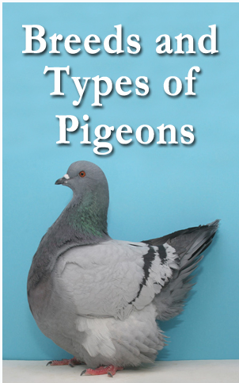

HOMING BREED
Flying or Homing Breeds
Possibly the most famous, this category includes racing pigeons that are used for endurance flying (distance or height) and their homing instinct. Breeds include Racing Homers and Rollers.
Kolodziej says that Portuguese tumblers are one of the smallest breeds of pigeons. “They are extremely fast flyers and they perform well.”
Their small size is intriguing as well as the way they carry themselves. They have an erect stance, powerful chest, and a small beak which makes their appearance pleasing.
“When the males court, they walk on tip-toe and almost inhale to make themselves appear more impressive,” Kolodziej has noticed. “Another interesting factor is the wide variety of colors and unique patterns. It is always exciting to watch the young birds feather out to see what you produced. My biggest enjoyment is watching them fly. I sit for hours and just watch.”
-
Portuguese Tumblers

A variety of Kolodziej’s flock of Portuguese tumblers.
-
Dark Check Show Roller

A dark check show roller pigeon. Photo by Layne Gardner.
-
German Long Face Tumbler

German long face tumbler is a slender upright breed. Photo by Layne Gardner.
-
Flying Baldhead Kite Pigeon

Photo by Layne Gardner.
-
Exhibition Blue Bar Homer

Photo by Layne Gardner.
-
Domestic Show Flight Pigeon

The Domestic Show Flight pigeon originated in New York state. This variety is a red plainhead. Photo by Layne Gardner.
-
Berlin Short-Faced Tumbler

Berlin Short-Faced Tumblers were developed in the mid 19th century by crossing the Ancient Tumbler, Kazaner Tumbler and other breeds in Berlin.Photo by Layne Gardner.
-
American Show Racer

Photo by Layne Gardner.
CLICK ME TO PREVIOUS PAGE CLICK ME TO HOME PAGE

Click arrow up to scroll up